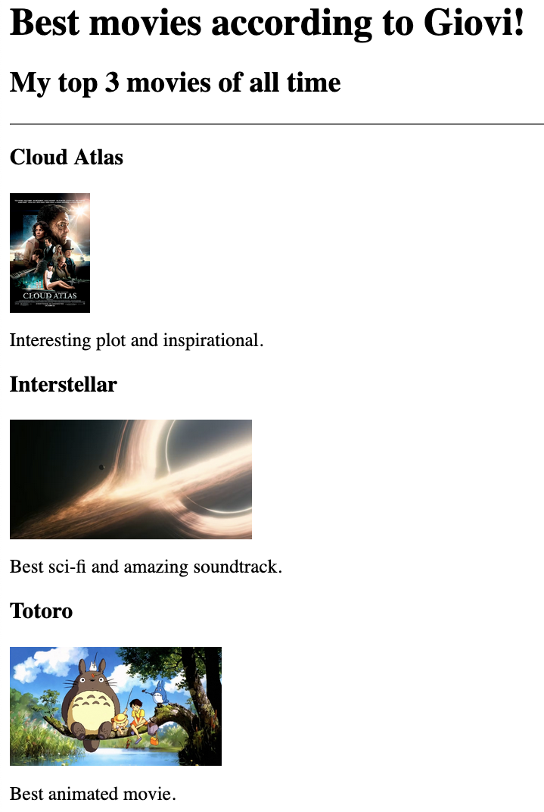
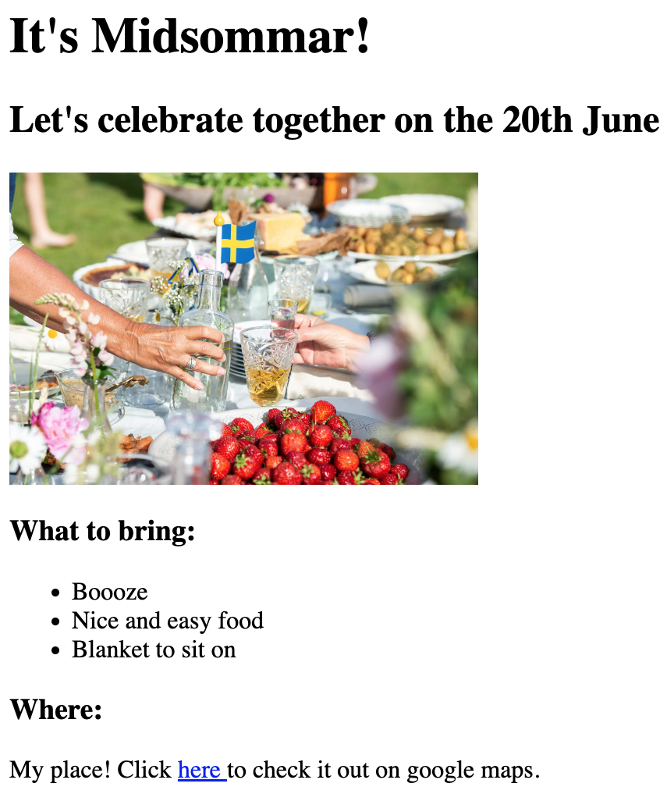
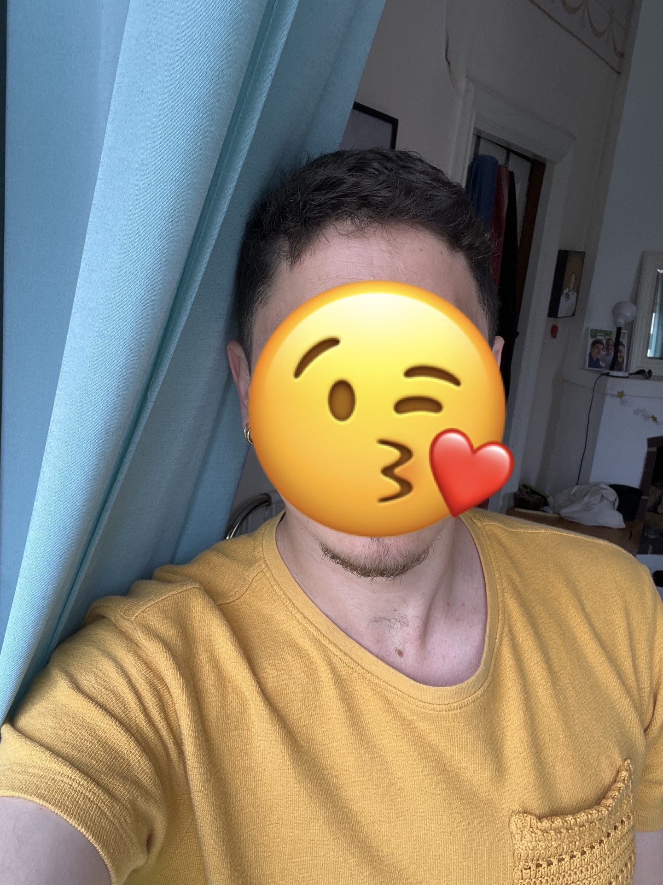

This is a little portfolio to collect and show the projects from my full-stack course.
This project shows three of my favourite movies
Here I created an invite to celebrate midsommar with my friends

ps. You can also click on my face to read about me!
